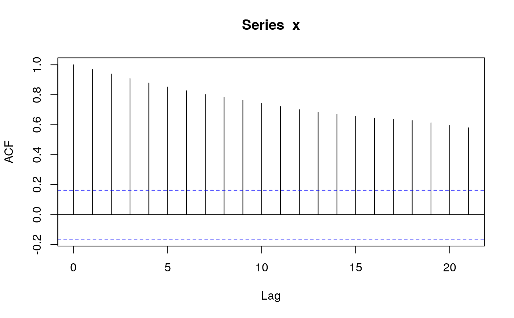
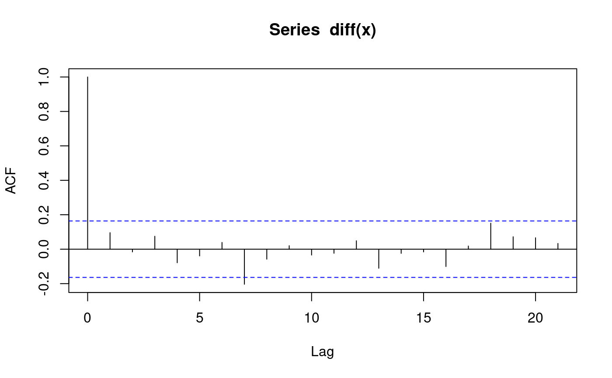
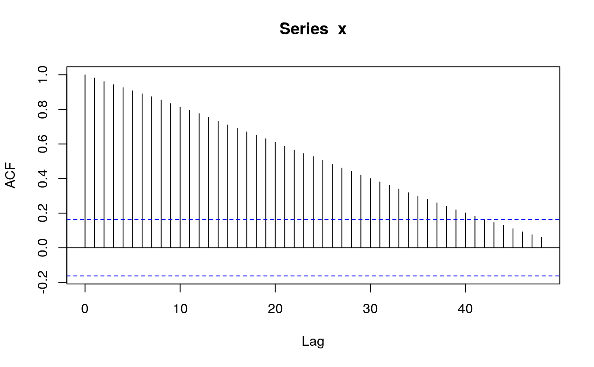
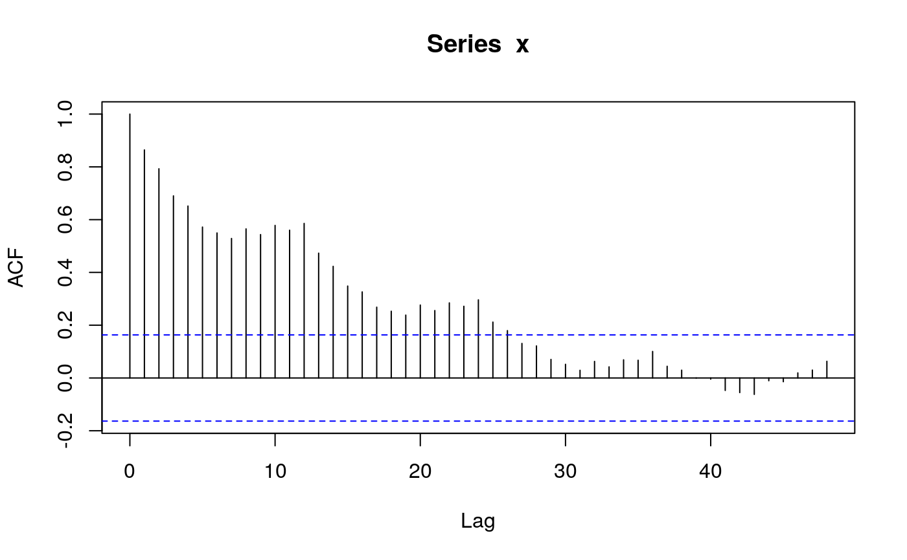
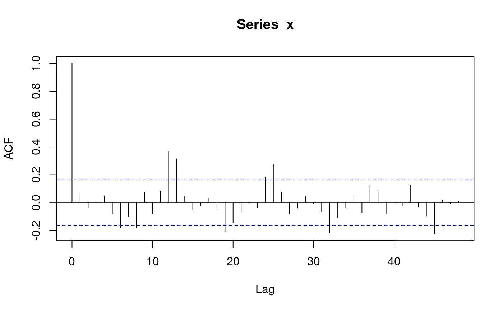
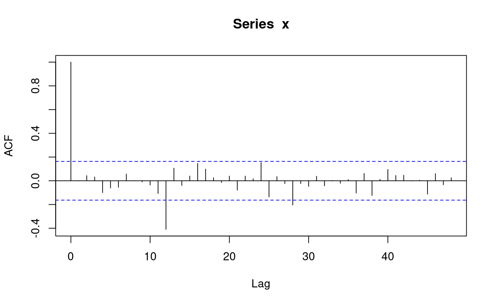

sim_sarima.RdSimulate trajectories of seasonal arima models.
sim_sarima(model, n = NA, rand.gen = rnorm, n.start = NA, x, eps,
xcenter = NULL, xintercept = NULL, …)
| model | specification of the model, a list, see `Details'. |
|---|---|
| rand.gen | random number generator for the innovations. |
| n | length of the time series. |
| n.start | number of burn-in observations. |
| x | initial/before values of the time series, a list, a numeric vector or time series, see Details. |
| eps | initial/before values of the innovations, a list or a numeric vector, see Details. |
| xintercept | non-constant intercept which may represent trend or covariate effects. |
| xcenter | currently ignored. |
| … | additional arguments for |
The model is specified by the argument "model" which is a list with
elements suitable to be passed to new("SarimaModel", ...), see
the description of class "SarimaModel". Here are some of the
possible components:
number of seasons in a year (or whatever is the larger time unit)
order of differencing, specifies the factor \((1-B)^{d1}\) for the model.
order of seasonal differencing, specifies the factor \((1-B^{period})^{ds}\) for the model.
ar parameters (non-seasonal)
ma parameters (non-seasonal)
seasonal ar parameters
seasonal ma parameters
Additional arguments for rand.gen may be specified
via the "…" argument.
In particular, the length of the generated series is specified with
argument n. Arguments for rand.gen can also be passed
via the "…" argument.
sim_sarima calls internally arima.sim to simulate the
ARMA part of the model. Then undifferences the result to obtain the
end result.
The function returns the simulated time series from the requested model.
Information about the model is printed on the screen if
info="print". To suppress this, set info to any other
value.
an object of class "ts"
#>x <- sim_sarima(n=144, model = list(ma=0.8)) # MA(1) x <- sim_sarima(n=144, model = list(ar=0.8)) # AR(1) x <- sim_sarima(n=144, model = list(ar=c(rep(0,11),0.8))) # SAR(1), 12 seasons x <- sim_sarima(n=144, model = list(ma=c(rep(0,11),0.8))) # SMA(1) # more enlightened SAR(1) and SMA(1) x <- sim_sarima(n=144,model=list(sar=0.8, nseasons=12, sigma2 = 1)) # SAR(1), 12 seasons x <- sim_sarima(n=144,model=list(sma=0.8, nseasons=12, sigma2 = 1)) # SMA(1) x <- sim_sarima(n=144, model = list(iorder=1, sigma2 = 1)) # (1-B)X_t = e_t (random walk) acf(x)x <- sim_sarima(n=144, model = list(iorder=2, sigma2 = 1)) # (1-B)^2 X_t = e_t x <- sim_sarima(n=144, model = list(siorder=1, nseasons=12, sigma2 = 1)) # (1-B)^{12} X_t = e_t x <- sim_sarima(n=144, model = list(iorder=1, siorder=1, nseasons=12, sigma2 = 1)) x <- sim_sarima(n=144, model = list(ma=0.4, iorder=1, siorder=1, nseasons=12, sigma2 = 1)) x <- sim_sarima(n=144, model = list(ma=0.4, sma=0.7, iorder=1, siorder=1, nseasons=12, sigma2 = 1)) x <- sim_sarima(n=144, model = list(ar=c(1.2,-0.8), ma=0.4, sar=0.3, sma=0.7, iorder=1, siorder=1, nseasons=12, sigma2 = 1)) x <- sim_sarima(n=144, model = list(iorder=1, siorder=1, nseasons=12, sigma2 = 1), x = list(init=AirPassengers[1:13])) p <- polynom(c(1,-1.2,0.8)) solve(p)#> [1] 0.75-0.8291562i 0.75+0.8291562i#> [1] 1.118034 1.118034sim_sarima(n=144, model = list(ar=c(1.2,-0.8), ma=0.4, sar=0.3, sma=0.7, iorder=1, siorder=1, nseasons=12))#> [1] 0.00000000 0.00000000 0.00000000 0.00000000 0.00000000 #> [6] 0.00000000 0.00000000 0.00000000 0.00000000 0.00000000 #> [11] 0.00000000 0.00000000 0.00000000 0.00000000 0.00000000 #> [16] 0.00000000 0.00000000 0.00000000 0.00000000 0.00000000 #> [21] 0.00000000 0.00000000 0.00000000 0.00000000 0.00000000 #> [26] 0.00000000 0.00000000 0.97308933 1.04350134 0.59292237 #> [31] -0.53822827 -4.47769247 -10.79039114 -15.61093462 -15.03436217 #> [36] -9.90625526 -2.77106146 2.49356073 1.70084985 -1.53343325 #> [41] -4.20215483 -2.52101991 2.22323764 2.61868442 -5.97858179 #> [46] -19.04262312 -25.01936230 -20.04895835 -8.59630439 0.62214940 #> [51] 0.01693335 -5.01790774 -7.92682166 -2.93504730 8.07067491 #> [56] 14.60949729 8.21672203 -6.63493784 -15.91419189 -13.31121792 #> [61] -3.50020222 3.28379557 0.21044756 -5.34098536 -5.67538886 #> [66] 3.08995325 16.68427245 25.59569129 22.13236956 13.21517068 #> [71] 9.12950754 13.19277223 20.79123151 23.05896994 14.96998480 #> [76] 6.90868985 8.32498380 19.13886453 34.41545582 44.52752101 #> [81] 40.75239588 34.25185311 34.15664273 41.41409116 51.01147588 #> [86] 52.64070961 42.20236160 33.58795445 37.94663822 52.49954503 #> [91] 71.84104105 83.59150409 77.46360219 69.03033233 70.33066643 #> [96] 81.52638849 95.43157707 99.78673446 91.07124445 83.28643097 #> [101] 89.30763568 106.97688756 130.62414330 145.33533573 138.45120893 #> [106] 124.97849411 119.74626677 126.64310376 140.69061374 147.79275159 #> [111] 143.03509687 138.97134195 149.87736612 171.92409663 197.03130887 #> [116] 210.70036497 201.97300326 184.44493448 173.57187217 175.29453150 #> [121] 188.31060067 194.99689156 190.23691613 187.11160219 200.12977189 #> [126] 225.78225150 253.37803846 267.79488717 259.20787767 240.84004134 #> [131] 229.66268033 230.96778968 244.78123846 250.03016211 243.45693745 #> [136] 240.70843863 253.52636252 280.19277484 310.55558069 329.66319950 #> [141] 325.08756447 308.14125691 297.53291465 298.28443959